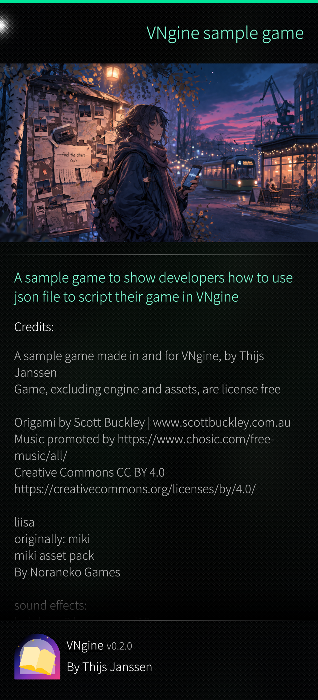
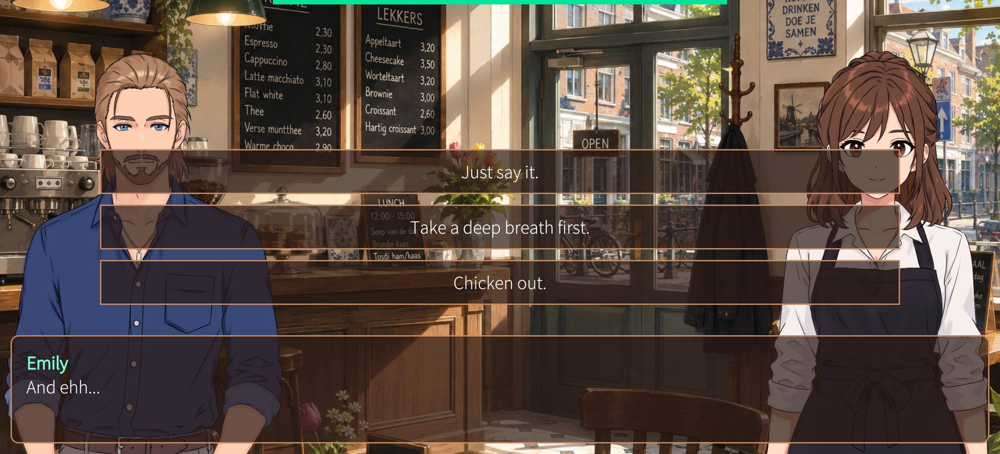
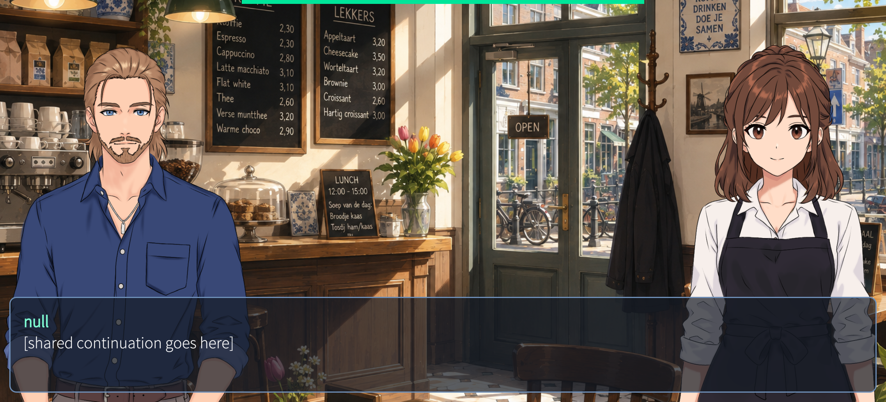
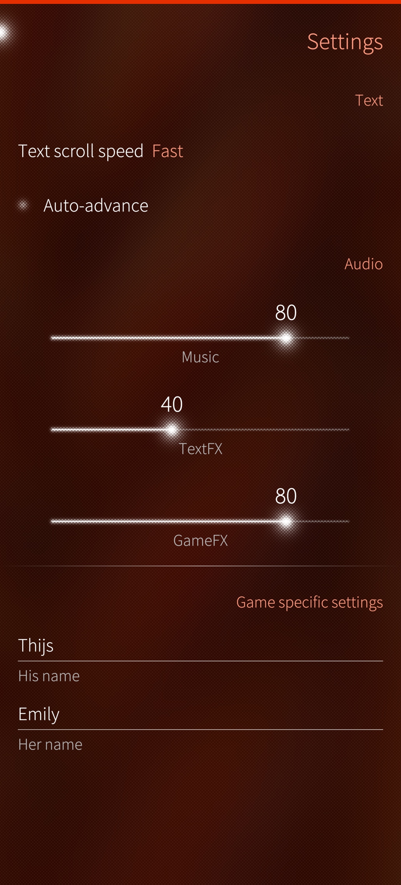
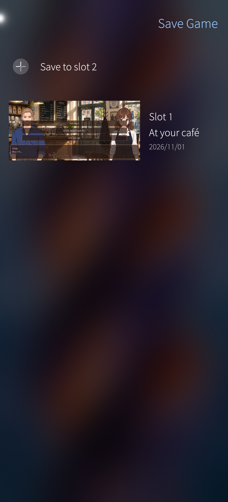

A visual novel game engine for SailfishOS. You provide the story scripts, assets and metadata — the engine handles rendering, input, saves, settings and localisation.

The textbox and choices are styled from small JSON files. A style file only names what it changes; everything else comes from the engine defaults. Three games, three looks, no engine code touched. Captures are from development builds.


A base file sets the shape; each character inherits it through base and
changes two colours. Emily above, Thijs below; choices work the same way.
Margins and other sizes are multiplied by a silica constant, to make sure it looks perfect on every device.
In development:
not the final release, no HUD yet.
// textbox_base.json
{
"style": {
"margins": { "left": 16, "right": 16,
"top": 16, "bottom": 16 },
"background": { "color": "#101010",
"opacity": 0.7 },
"border": { "width": 2,
"color": "#909090",
"opacity": 1 },
"radius": 12
}
}
// textbox_emily.json
{
"base": "textbox_base",
"style": {
"background": { "color": "#2A1A16" },
"border": { "color": "#C98A5E" }
}
}
// textbox_thijs.json
{
"base": "textbox_base",
"style": {
"background": { "color": "#141B24" },
"border": { "color": "#6E8FB8" }
}
}Switched mid-scene with the style command. The textbox file changes one
colour; the choice file restyles the whole menu.
// colorful_textbox.json
{ "style": { "background": { "color": "#3050C0",
"opacity": 0.7 } } }
// flashy_choice.json
{
"style": {
"grid": {
"spacing": 12,
"width": 0.7,
"padding": { "left": 20, "right": 20,
"top": 20, "bottom": 20 },
"background": { "color": "#2A0018",
"opacity": 0.55 },
"border": { "width": 3, "color": "#FFC83C",
"opacity": 1 },
"radius": 24
},
"option": {
"padding": { "left": 24, "right": 24,
"top": 18, "bottom": 18 },
"background": { "color": "#FF3D9A",
"opacity": 0.85 },
"border": { "width": 2, "color": "#FFD972",
"opacity": 1 },
"radius": 16,
"text": { "color": "#FFF3C4" }
}
}
}No style file at all: the look every game starts from.

Outside the game screen, everything is a regular Sailfish page: Silica controls, pull-down menus, and colours that follow the phone's ambience.
The settings page is generated from the game's manifest. Text speed and auto-advance are always there; audio channels, toggles, dropdowns, text fields and sliders appear only when the game declares them. Here the game asks for two character names, which the script reads live.
Each slot keeps a thumbnail, a customizable label with a default chosen by the game, and the date.

A step by step tutorial from empty folder to running app.
Build manifests, styles and scene scripts in a form instead of by hand.
Visual novels built with VNgine.
How the engine is put together, for contributors.
Bundled engine. Your game is a self-contained application. Players download the game directly from Harbour or another channel — no separate engine install, no library browsing.
SailfishOS feel. Pull-down menus, page stack navigation: your game feels at home.
Harbour-first. VNgine and base games target Harbour compliance.